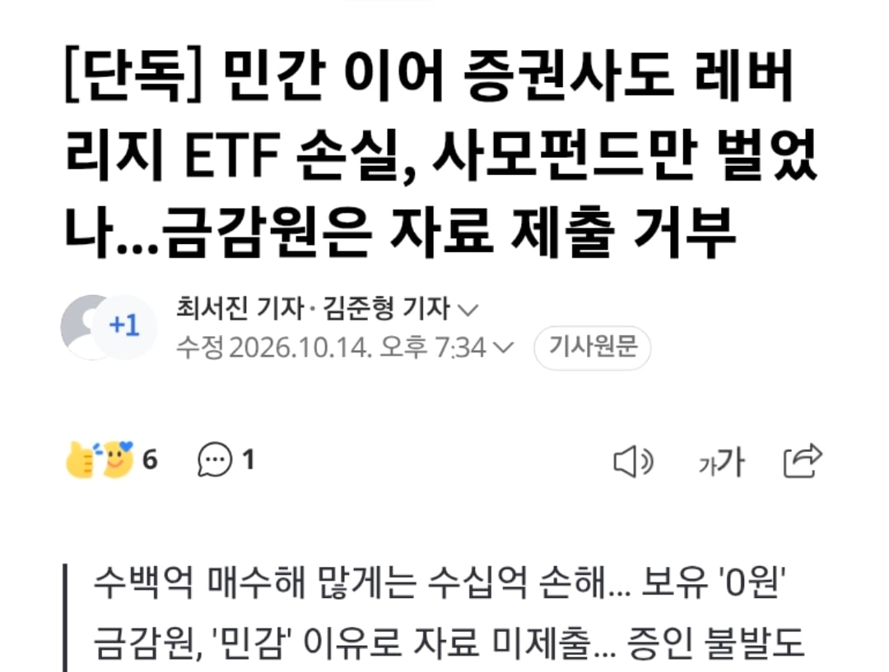
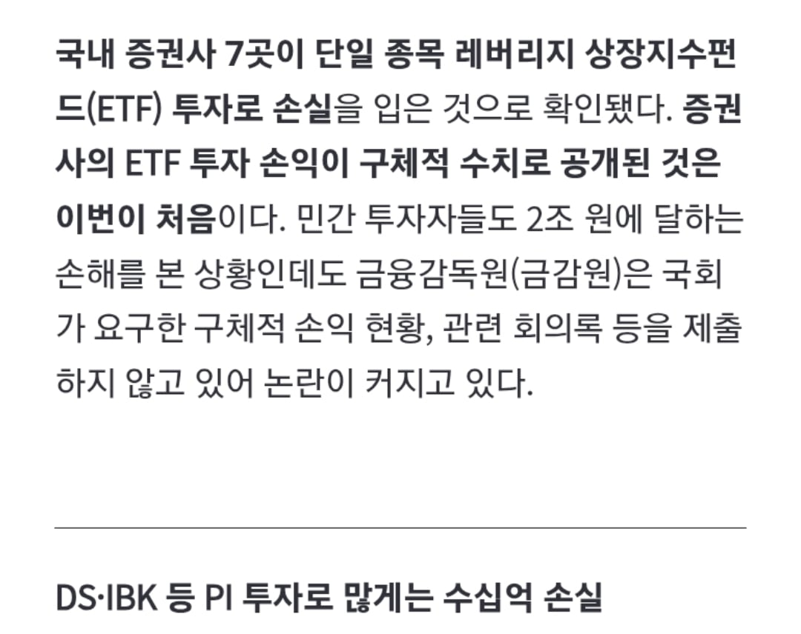

민간 만 당한게 아니라 증권사 도 당함


민간 만 당한게 아니라 증권사 도 당함
자료제출 거부하면 끝임?
(직원몇명인생)끝
국감이라 미제출 하면 국회의원 소리지르고 끝임 후속조치가 이뤄지면 감사하던지 하는건데 정부주도하에 이뤄진거라 과연?
한국의 기형적인 주식시장에서 삼닉단일 레버리지를 만든
스트레스지수 테스트도안하고 반대를 무시하고 굳이 레버리지 시행한 이유가 뭘까
여기서 안하면 홍콩가서 할거라서
라는 핑계로 지수의 1/3차지하는 딱 두종목 개헐레벌떡 열다가 개십창결과 ㅋㅋㅋ
누군가는 했겠제~
진짜 책임지는 인간이 없네
맨 마지막에 도장찍은 새끼 목 잘라서 광화문에 효수해야함
/
ㅋㅋㅋㅋㅋㅋㅋㅋㅋ공평하게 당했네
pi 기관에서 투자로 운용하는 건데 매수버튼 누른 담당자 짤렷으려나
이 계약은 절대적으로 공정하다
수수료는 맛있으니 상관 없지
대한민국 안락사는 이거이거 ㅋㅋ
누군가는 결정 했겠지~
몇 년 전이었음 나라 팔아먹었다고 난리가 났을텐데